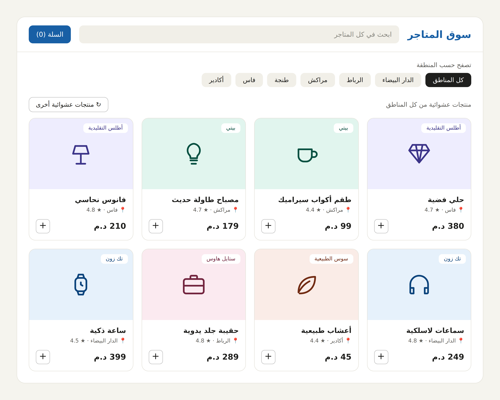

Une magazine en ligne qui regroupe plusieurs boutiques Prestataire , chacune créant son propre espace dédié,
ou qui peut fonctionner comme un site web unique lorsqu'on accède à l'espace dédié de chaque magasin,
Le visiteur peut naviguer et effectuer des achats en ligne, ou bien avoir un aperçu avant de se rendre au marché.
BUT: Un site web qui met en relation les chefs d'entreprise, les commerçants des marchés,
les artisans ou les négociants via des plateformes en ligne et les acheteurs;

Exemple de Site Market
Détails :
-Le site est divisé en plusieurs sections :
-Sections produits (complètes et aléatoires);
-Section vêtements ou électronique etc…;
-Section magasins (disponible sur le site);
-Un système de sécurité entre le vendeur et l'acheteur pour éviter les fraudes et les escroqueries.
- Le propriétaire du magasin peut ajouter la localisation géographique précise,
tout en offrant aux visiteurs la possibilité d'effectuer des recherches au sein d'une zone définie.
-Espace adaptatif avec contrôle de l'apparence
-Ai aide les acteurs
-Espace pour les acteurs contacter (acheteur avec vendeur ou administrateur avec vendeur et acheteur avec administrateur)
-Système intelligent pour Attirer les utilisateurs (créer compte gratuit, start gratuit pour les prestataire…..)